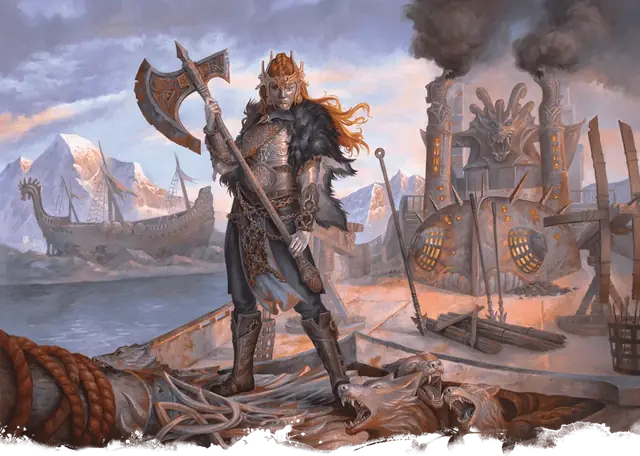

Королева Фарфалле
Queen Forfallen
Средний Конструкт, Нейтральный Злой, именной НИП

Класс Защиты 16 Инициатива +6 (16)
Хиты 153 (18к8 + 72)
Скорость 30 футов
| мод | спас | ||
|---|---|---|---|
| СИЛ | 20 | +5 | +5 |
| ЛОВ | 14 | +2 | +2 |
| ТЕЛ | 19 | +4 | +4 |
| мод | спас | ||
|---|---|---|---|
| ИНТ | 15 | +2 | +2 |
| МДР | 17 | +3 | +7 |
| ХАР | 18 | +4 | +4 |
Иммунитеты Яд; Истощение, Окаменевший, Отравленный
Чувства пассивное Восприятие 17
Языки Общий
Опасность 10 (5 900 опыта; БВ +4)
Особенности
Вдохновляющее присутствие. Существа по выбору Фарфалле (исключая её саму) в 30-футовой Эманации, исходящей от неё, совершают броски атаки с Преимуществом. Фарфалле не может пользоваться этой особенностью, если Недееспособна.
Сопротивление магии. Фарфалле совершает с Преимуществом спасброски от заклинаний и прочих магических эффектов.
Действия
Мультиатака. Фарфалле совершает три атаки Секирой или Одноручным топором в любой комбинации.
Секира. Бросок рукопашной атаки: +9, досягаемость 5 фт. Попадание: 18 (2к12 + 5) Рубящего урона, и цель Отравлена до конца своего следующего хода.
Одноручный топор. Бросок рукопашной или дальнобойной атаки: +9, досягаемость 5 фт. или дистанция 20/60 фт. Попадание: 22 (5к6 + 5) Рубящего урона.
Бонусные действия
Хватка ржавчины. Спасбросок Телосложения: Сл 16, одно видимое Фарфалле существо в 20 футах. Если цель Отравлена, она совершает этот спасбросок с Помехой. Первый провал: Цель Опутана и повторяет спасбросок в конце своего следующего хода, если она всё ещё Опутана, оканчивая этот эффект при успехе. Второй провал: Цель перестаёт быть Опутанной и становится Окаменевшей, превращаясь в статую из ржавого железа.
Бонус мастерства +4
Королева Фарфалле
Изъеденная ржавчиной пиратская королева
Одна из самых влиятельных жертв сверхъестественного ржавого проклятия на Муншэйских островах — это пиратская королева Фарфалле. Она бороздит моря на самом большом и защищённом корабле на всём Муншэй — жемчужине своей армады, — который она вдобавок усилила ржавыми металлическими листами и командой кровожадных оржавевших берсерков.
Королева Фарфалле — сильная женщина-человек с длинными рыжими волосами. Хотя ржавое проклятие превратило её конечности и кожу в металл, она до сих пор сопротивляется ослабляющей коррозии, которой подвергаются жертвы. Команда уверяет, будто здоровье и мощь ей сохраняет неутолимая жажда добычи.
История
Мало кому известно прошлое королевы Фарфалле. Она предпочитает не отвлекаться от дерзких авантюр как самая прославленная пиратская королева островов Муншэй. Однако на деле «королева Фарфалле» — это прозвище, которое взяла себе Ренаута, дочь Ольфгаута и сестра норландского ярла Ольфсвенна. Ренаута узнала о Ржавлении и приняла проклятие как путь к силе и воинской доблести.
Королева Фарфалле втайне общается с братом, и время от времени они делятся друг с другом полезными сведениями. Ольфсвенн надеется, что сумеет вернуть Фарфалле к её прежнему имени и роли Ренауты, но сама Фарфалле предпочитает новое «я».
Личность
Нрав у королевы Форфаллен столь же крут, как и её закованные в металл мускулы. Её властный голос легко перекрывает шум абордажного боя, а перед её твёрдой, прямолинейной манерой общения трудно устоять возможным союзникам. Растущая сеть сторонников свидетельствует о её дипломатических способностях и остром уме, что скрываются за дерзким поведением.
Она обращается к негодяям, бандитам, контрабандистам и прочим, кто живёт вне норландского общества, суля звонкую монету и славу. Что гораздо опаснее — она проповедует Ржавление как путь к силе, а не к немощи, и те, кто жаждет её мощи, сами ищут заражения. Никто на островах Муншэй не сделал для распространения проклятия больше, чем Фарфалле.
Как и все жертвы Ржавления, Фарфалле испытывает сильное желание осквернять природные красоты. До сих пор ей удавалось сдерживать этот порыв, направляя силы на создание союзов с другими пиратами и оржавевшими, однако она без тени сожаления вырубает вековые леса ради корабельной древесины и вырывает руду из пасторальных холмов.
Как использовать королеву Фарфалле
Королева Фарфалле — могучая воительница и предводительница. Все на островах Муншэй знают о её командах оржавевших существ и пиратов, так что и персонажи должны услышать о королеве Фарфалле как можно раньше в любой кампании, где она присутствует. Они могут даже увидеть её вдалеке на носу корабля кровожадных грабителей в огнях разорительного набега.
Тайная связь Фарфалле с её братом, норландским ярлом Ольфсвенном, может мотивировать ярла как-то защищать или укрывать злобную пиратскую королеву. Таким образом, родословная королевы Фарфалле может предоставить неожиданные возможности для расследования, политики и семейной драмы в прямолинейном приключении про охоту на пиратов.